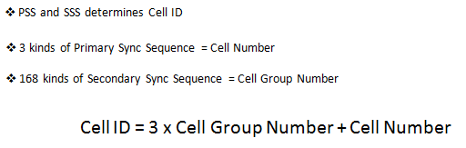

| Physical Cell ID |
|
As the terminology implies, Physical Cell ID is an indentification of a cell at physical layer. It has similar role as Primary Scrambling Code of UMTS cell. This physical cell ID is determined by Primary Sync Signal and Secondary Sync Signal as described below.

Refer to Cell ID Detection ans System Information Detection to know specifically how this physical cell is used in the process of initial cell detection.
Note : There are another type of cell ID which is carried by SIB3. When we say just 'Cell ID', it normally refers to the cell ID carried by SIB3 but many people (including myself -:) get confused with 'cell id' and 'physical cell id'. Physical Cell ID is mainly used by UE to decode physical layer data being transmitted by eNodeB. Cell ID in SIB3 is designed for eNodeB management within the core network, but this one is also used for UE to identify a specific cell in terms of RRC/NAS layer processing.
|